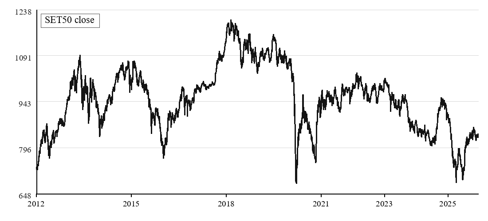

Market series
SET50 daily index

All numerical features are reconstructed using only information available by the close of day t.

Sentiment is generated without using labels from the subsequent forecasting period.
Rolling 60-day decomposition versus matched technical inputs.
Downstream controls and a separate Bull/Bear/Leader sentiment audit.
Causal Bull/Sideway/Bear routing, train-only SHAP and LIME fidelity.
Partial-2026 stress testing and frozen SET100 evaluation.
LSTM-CNN-Attention; four held-out years and five seeds.
Largest selective forecasting gain.
Versus equal-call and near-cost controls; intrinsic endpoint.
Share of repeated explanations classified as low fidelity.
VMD effect: -0.60 to +0.35 percentage points.
Predicted news: no consistent adjusted forecasting gain.
Partial-2026 stress test: one-sided collapse in several objectives.
SET100 transfer: lower mean balanced accuracy for all five models.
Observed improvements were architecture- and endpoint-dependent rather than universal.